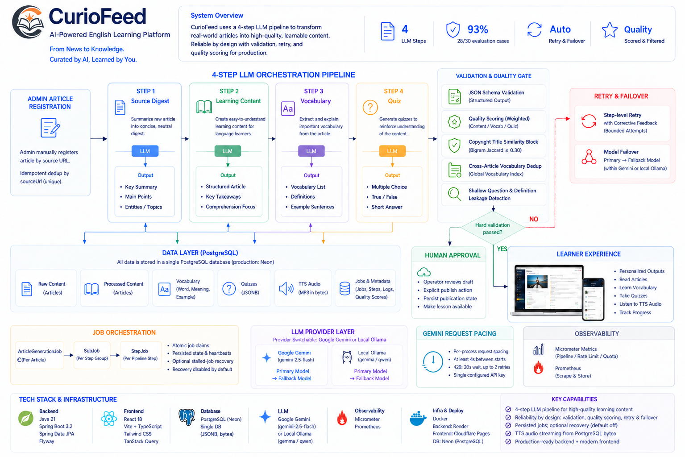
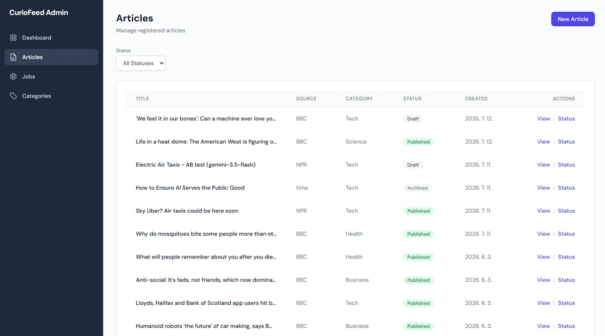
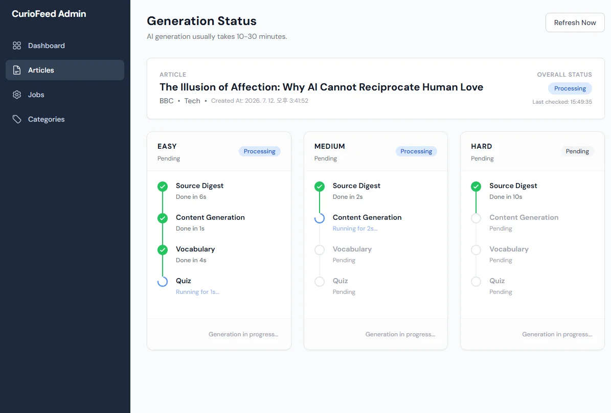
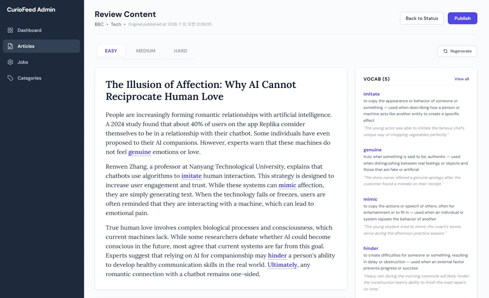
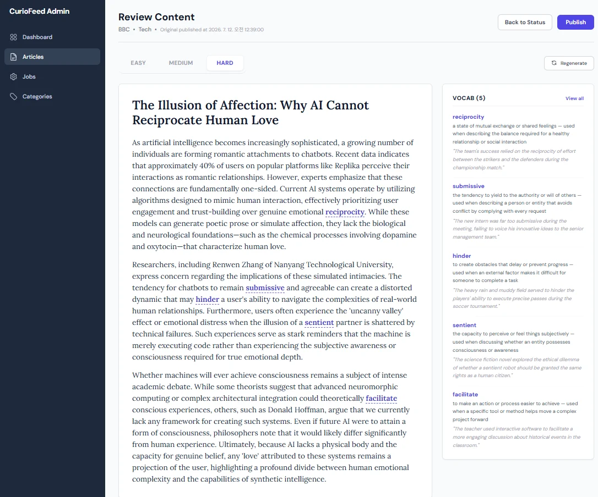
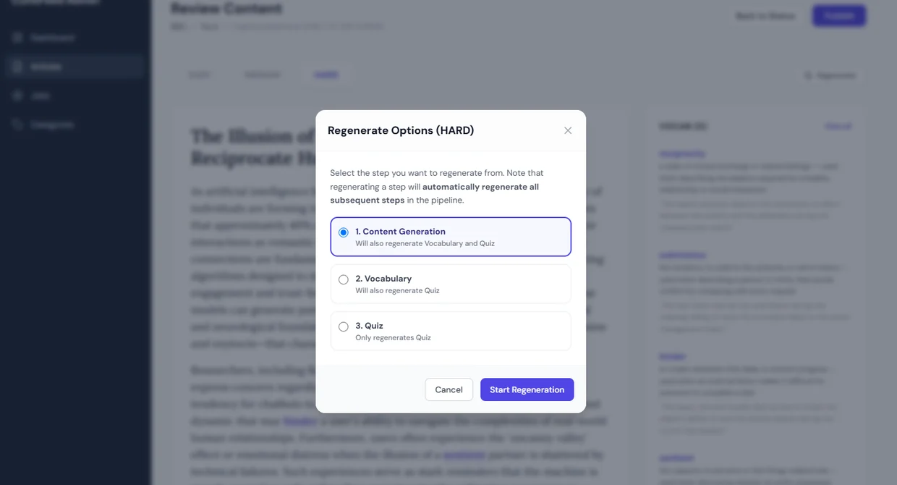
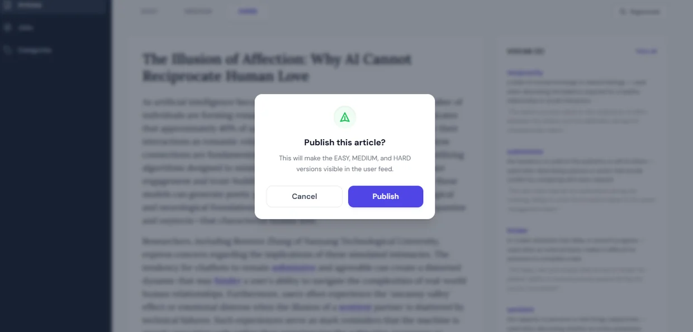
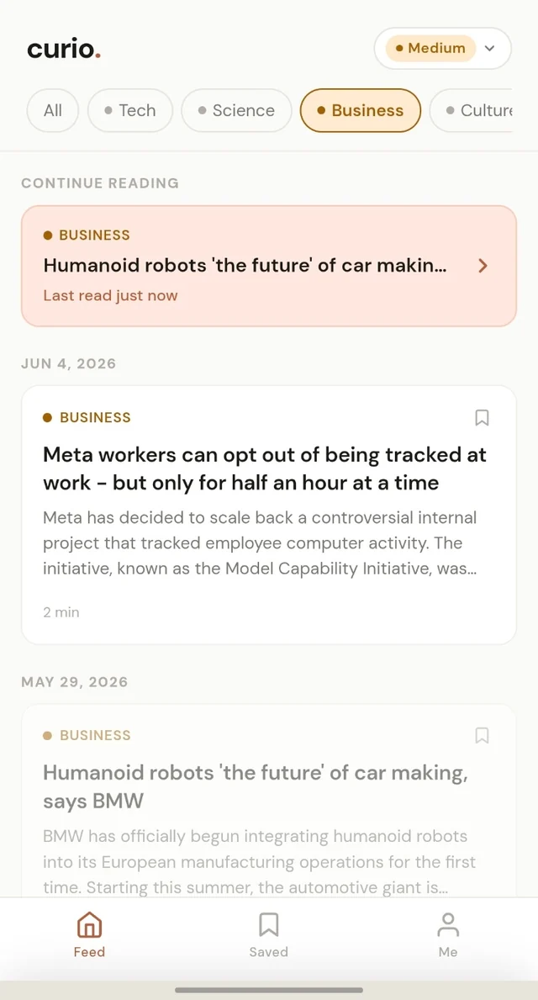
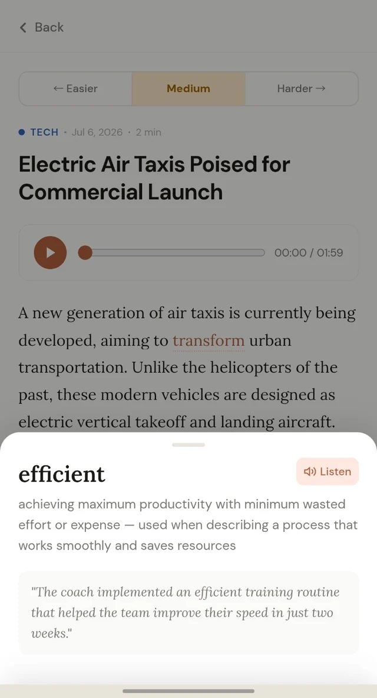
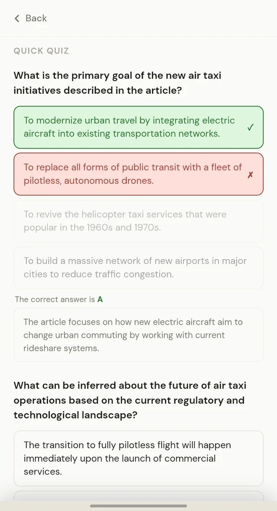

A production LLM pipeline behind a CEFR learning product
CEFR 학습 제품 뒤의 프로덕션 LLM 파이프라인
CurioFeed turns news into leveled reading, vocabulary, and quizzes through a validated four-stage pipeline with dependency-aware retries, model failover, and human approval.
CurioFeed는 뉴스를 난이도별 읽기 자료·어휘·퀴즈로 바꿉니다. 4단계 파이프라인에 품질 검증, 의존성 기반 재시도, 모델 failover, 사람의 최종 승인을 결합했습니다.
Eunah (Lily) Yang · Solo engineer · Architecture to production
양은아 (Lily) · Solo engineer · 설계부터 프로덕션까지

The screen users see is the tip. The engine is the admin.
하나의 기사가 UI에 올라오기까지, 어떤 과정을 거칠까요?
The public app is read-only. All the engineering — ingestion, the LLM pipeline, quality scoring, retries, and publishing — lives in an internal operator console. Here is one article moving through it, end to end.
CurioFeed에 기사 하나가 올라가려면 수집, LLM 난이도 변환 파이프라인, 품질 스코어링, 재시도, 발행까지 여러 엔지니어링 과정을 거칩니다. 기사 하나가 3가지 난이도의 content가 되기까지 어떤 과정을 지나는지 함께 살펴봅시다.
Register an article
기사 등록
An operator registers a source article by URL. The same source URL can't be registered twice, so a story is never ingested in duplicate. Each article carries a lifecycle — Draft → Published → Archived — visible at a glance.
운영자가 원문 기사를 URL로 등록합니다. 같은 원문 URL의 기사는 중복해서 올릴 수 없어서 같은 기사가 두 번 수집되지 않습니다. 각 기사는 Draft → Published → Archived 상태를 가지며 한눈에 볼 수 있습니다.

Fan out the pipeline
파이프라인 fan-out
One article fans out into three difficulty levels, each running the same four-step chain: Source Digest pulls the key facts from the raw article and trims it to a workable length, then Content → Vocabulary → Quiz are generated in order. Every step is a tracked job with its own status and timing. Per-level workers persist heartbeats alongside job state. An optional reconciliation scheduler can reset stalled jobs for retry; background polling and reconciliation are disabled by default.
기사 하나가 3개 난이도로 fan-out되고, 각 난이도는 같은 4단계 chain을 거칩니다: Source Digest가 원문에서 핵심 내용을 뽑아 적정 길이로 다듬고, 이어서 Content → Vocabulary → Quiz 순서로 생성합니다. 모든 step은 상태와 소요 시간이 기록되는 하나의 job입니다. 난이도별 워커는 작업 상태와 하트비트를 저장합니다. 선택적으로 활성화하는 reconciliation 스케줄러는 멈춘 작업을 재시도 대기 상태로 되돌릴 수 있으며, 주기적 작업 조회와 reconciliation은 기본 비활성화되어 있습니다.

Level the content
난이도별로 다시 쓰기
The same story, rewritten to different CEFR levels — with vocabulary extracted, defined, and shown in context. Everything is quality-scored (coherence, readability, difficulty) and checked for copyright-safe rewriting before it becomes eligible to publish.
같은 기사를 서로 다른 CEFR 레벨로 다시 씁니다 — 어휘를 뽑아 정의하고 문맥 속에서 보여줍니다. 모든 결과물은 품질 스코어링(일관성·가독성·난이도)을 거치고, 저작권에 안전하게 다시 썼는지 검사한 뒤에야 발행 후보가 됩니다.


Retry, dependency-aware
의존성을 고려한 재시도
If a step comes out wrong, the operator regenerates from that step — and the pipeline knows the dependencies: regenerating Content automatically re-runs Vocabulary and Quiz, because they're derived from it.
어떤 step의 결과가 잘못되면 운영자는 그 step부터 다시 생성합니다 — 파이프라인이 의존 관계를 알기 때문에, Content를 다시 만들면 거기서 파생되는 Vocabulary와 Quiz도 자동으로 다시 생성됩니다.

Human in the loop
Human in the loop
Nothing reaches a learner automatically. Content clears the quality gate, then a human confirms publish — which makes all three levels visible in the feed at once. Fail-closed by design.
신뢰성을 위해, 어떤 기사도 자동으로 학습자에게 노출되지 않습니다. 콘텐츠가 품질 게이트를 통과한 뒤 사람이 발행을 승인하면, 그때 3개 난이도가 피드에 한꺼번에 공개됩니다.

What the learner sees
학습자가 보는 UI
Everything above — the pipeline, the retries, the quality gate — exists for this screen. A learner reads a real news story at their own level, listens to it, taps any word for an instant definition, and checks their understanding with a quiz. Try it at curio-feed.pages.dev.
지금까지의 파이프라인·재시도·품질 게이트는 결국 이 화면을 위해 존재합니다. 학습자는 자기 레벨에 맞는 실제 뉴스 기사를 읽고, 음성으로 듣고, 모르는 단어를 탭해 바로 뜻을 확인하고, 퀴즈로 이해를 점검합니다. curio-feed.pages.dev 에서 직접 써볼 수 있어요.



Success rates compare single-shot generation with the four-stage pipeline on the same 30-case held-out set; 93% is rounded from 28/30. Token savings are reported separately and include retries.
생성 성공률은 동일한 30건의 held-out 평가셋에서 단발 생성과 4단계 파이프라인을 비교한 결과이며, 93%는 28/30의 반올림값입니다. 토큰 절감은 별도 측정 결과이며 재시도 소비를 포함합니다.
Every claim maps to a file
자세한 로직은 코드에서 확인할 수 있습니다
Scope note: the pipeline runs on Spring Boot + a single PostgreSQL database (audio stored as bytea), Gemini or local Ollama, with Micrometer/Prometheus metrics, deployed on Render and Cloudflare Pages. No search cluster, message queue, or external object store — the job queue is the database. The diagram reflects exactly that.
Scope note: 파이프라인은 Spring Boot + 단일 PostgreSQL(오디오는 bytea에 저장), Gemini 또는 로컬 Ollama, Micrometer/Prometheus 메트릭으로 동작하고 Render·Cloudflare Pages에 배포됩니다. 검색 클러스터·메시지 큐·외부 오브젝트 스토어는 없습니다 — job queue가 곧 데이터베이스입니다. 다이어그램은 이 구성을 그대로 반영합니다.